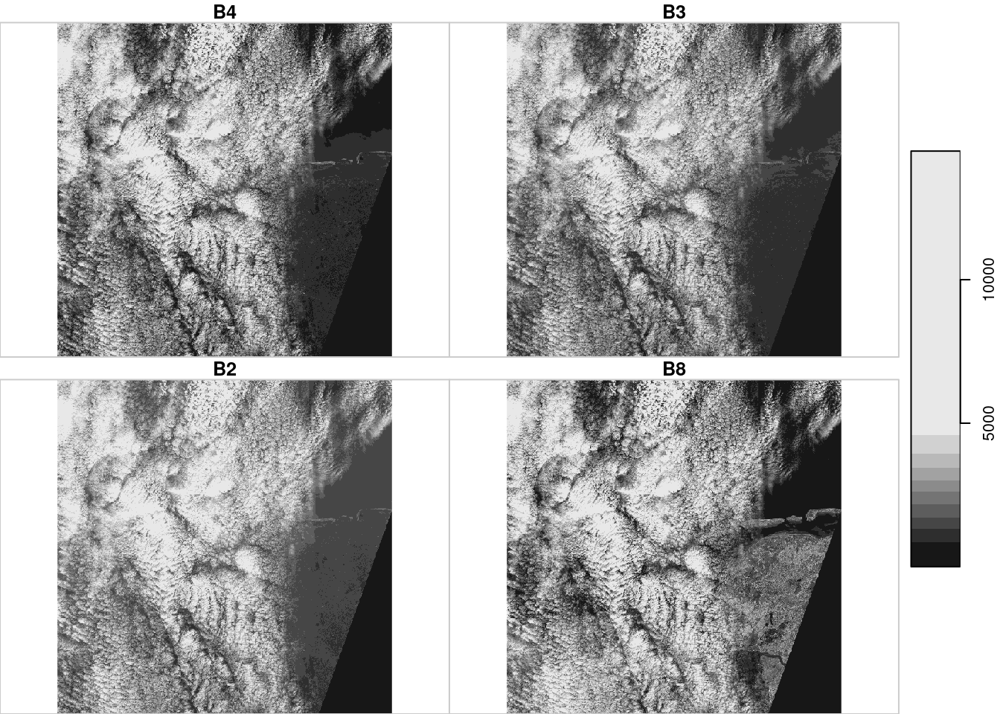

Chapter 6 Raster and vector datacubes
Array data are data where values are indexed along multiple array dimensions. Raster and vector datacubes refer to array data, where one or more of the dimensions refer to space, and often other dimensions refer to time.
6.1 Package stars
Athough package sp has always had limited support for raster data,
over the last decade R package raster has clearly been dominant
as the prime package for powerful, flexible and scalable raster analysis.
Its data model is that of a 2D raster, or a set of raster layers (a
“raster stack”). This follows the classical static GIS world view,
where the world is modelled as a set of layers, each representing
a different theme. A lot of data available today however is dynamic,
and comes as time series of rasters for different themes. A raster
stack does not meaningfully reflect this, requiring the user to
do shadow book keeping of which layer represents what. Also, the
raster package does an excellent job in scaling computations up
to datasizes no larger than the local storage (the computer’s hard
drives). Recent datasets however, including satellite imagery,
climate model or weather forecasting data, often no longer fit in
local storage. Package spacetime addresses the analysis of time
series of vector geometries or raster grid cells, but does not
extend to higher-dimensional arrays.
Here, we introduce a new package for raster analysis, called stars
(for scalable, spatiotemporal tidy arrays) that
- allows for representing dynamic raster stacks,
- in addition to regular grids handles rotated, sheared, rectilinear and curvilinear rasters,
- provides a tight integration with package
sf, - follows the tidyverse design principles,
- aims at being scalable, also beyond local disk size,
- also handles array data with non-raster spatial dimensions, the vector datacubes,
- provides further integration of novel features in the GDAL library than other R packages have given so far.
Vector data cubes include for instance time series for simple features, or spatial graph data such as origin-destination matrices. The wider concept of spatial vector and raster data cubes is explained in section 6.3
6.2 Raster data
As introduced in section 3.4, raster data are spatial datasets where observations are aligned on a regular grid usually with square grid cells (in some coordinate reference system, chapter 2). Raster datasets are used often to represent spatially continuously varying phenomena such as temperature or elevation, and also for observed imagery for instance obtained from satellites.
6.2.1 Reading and writing raster data
Raster data typically are read from a file. We read an example
file of a regular, non-rotated grid from the package stars:
The dataset contains (a section of) a Landsat 7 scene, with the 6 30m-resolution bands (bands 1-5 and 7) for a region covering the city of Olinda, Brazil. A short summary of the data is given by
# stars object with 3 dimensions and 1 attribute
# attribute(s):
# L7_ETMs.tif
# Min. : 1.0
# 1st Qu.: 54.0
# Median : 69.0
# Mean : 68.9
# 3rd Qu.: 86.0
# Max. :255.0
# dimension(s):
# from to offset delta refsys point values x/y
# x 1 349 288776 28.5 UTM Zone 25, Southern Hem... FALSE NULL [x]
# y 1 352 9120761 -28.5 UTM Zone 25, Southern Hem... FALSE NULL [y]
# band 1 6 NA NA NA NA NULLwhere we see the offset, cellsize, coordinate reference system,
and dimensions. The object x is a simple list of length one, holding
a three-dimensional array:
# [1] 1# [1] "array"# x y band
# 349 352 6and in addition holds an attribute with a dimensions table with all the metadata required to know what the array values refer to, obtained by
# from to offset delta refsys point values x/y
# x 1 349 288776 28.5 UTM Zone 25, Southern Hem... FALSE NULL [x]
# y 1 352 9120761 -28.5 UTM Zone 25, Southern Hem... FALSE NULL [y]
# band 1 6 NA NA NA NA NULLWe can get the spatial extent of the array by
# xmin ymin xmax ymax
# 288776 9110729 298723 9120761Raster data can be written to local disk using write_stars:
where the format (in this case, GeoTIFF) is derived from the file extension. As for simple features, reading and writing uses the GDAL library; the list of available drivers for raster data is obtained by
6.2.2 Plotting raster data
We can use the base plot method for stars objects, shown in figure 6.1.

Figure 6.1: 6 30m Landsat bands downsampled to 90m for Olinda, Br.
The default color scale uses grey tones, and stretches this such that color breaks correspond to data quantiles over all bands. A more familiar view is the rgb or false color composite:
par(mfrow = c(1, 2))
plot(x, rgb = c(3,2,1), reset = FALSE, main = "RGB") # rgb
plot(x, rgb = c(4,3,2), main = "False color (NIR-R-G)") # false color
Figure 6.2: two RGB composites
6.2.3 Analysing raster data
Element-wise mathematical operations on stars objects are just passed
on to the arrays. This means that we can call functions and create
expressions:
# stars object with 3 dimensions and 1 attribute
# attribute(s):
# L7_ETMs.tif
# Min. :0.00
# 1st Qu.:3.99
# Median :4.23
# Mean :4.12
# 3rd Qu.:4.45
# Max. :5.54
# dimension(s):
# from to offset delta refsys point values x/y
# x 1 349 288776 28.5 UTM Zone 25, Southern Hem... FALSE NULL [x]
# y 1 352 9120761 -28.5 UTM Zone 25, Southern Hem... FALSE NULL [y]
# band 1 6 NA NA NA NA NULL# stars object with 3 dimensions and 1 attribute
# attribute(s):
# L7_ETMs.tif
# Min. : 1.0
# 1st Qu.: 62.0
# Median : 77.5
# Mean : 77.1
# 3rd Qu.: 94.9
# Max. :266.1
# dimension(s):
# from to offset delta refsys point values x/y
# x 1 349 288776 28.5 UTM Zone 25, Southern Hem... FALSE NULL [x]
# y 1 352 9120761 -28.5 UTM Zone 25, Southern Hem... FALSE NULL [y]
# band 1 6 NA NA NA NA NULLor even mask out certain values:
# stars object with 3 dimensions and 1 attribute
# attribute(s):
# L7_ETMs.tif
# Min. : 50
# 1st Qu.: 64
# Median : 75
# Mean : 79
# 3rd Qu.: 90
# Max. :255
# NA's :149170
# dimension(s):
# from to offset delta refsys point values x/y
# x 1 349 288776 28.5 UTM Zone 25, Southern Hem... FALSE NULL [x]
# y 1 352 9120761 -28.5 UTM Zone 25, Southern Hem... FALSE NULL [y]
# band 1 6 NA NA NA NA NULLor un-mask areas:
# stars object with 3 dimensions and 1 attribute
# attribute(s):
# L7_ETMs.tif
# Min. : 0
# 1st Qu.: 54
# Median : 69
# Mean : 63
# 3rd Qu.: 86
# Max. :255
# dimension(s):
# from to offset delta refsys point values x/y
# x 1 349 288776 28.5 UTM Zone 25, Southern Hem... FALSE NULL [x]
# y 1 352 9120761 -28.5 UTM Zone 25, Southern Hem... FALSE NULL [y]
# band 1 6 NA NA NA NA NULLDimension-wise, we can apply functions to array dimensions of stars
objects just like apply does this to matrices. For instance, to
compute for each pixel the mean of the 6 band values we can do
# stars object with 2 dimensions and 1 attribute
# attribute(s):
# mean
# Min. : 25.5
# 1st Qu.: 53.3
# Median : 68.3
# Mean : 68.9
# 3rd Qu.: 82.0
# Max. :255.0
# dimension(s):
# from to offset delta refsys point values x/y
# x 1 349 288776 28.5 UTM Zone 25, Southern Hem... FALSE NULL [x]
# y 1 352 9120761 -28.5 UTM Zone 25, Southern Hem... FALSE NULL [y]A more meaningful function would e.g. compute the NDVI (normalized differenced vegetation index):
# stars object with 2 dimensions and 1 attribute
# attribute(s):
# ndvi
# Min. :-0.753
# 1st Qu.:-0.203
# Median :-0.069
# Mean :-0.064
# 3rd Qu.: 0.187
# Max. : 0.587
# dimension(s):
# from to offset delta refsys point values x/y
# x 1 349 288776 28.5 UTM Zone 25, Southern Hem... FALSE NULL [x]
# y 1 352 9120761 -28.5 UTM Zone 25, Southern Hem... FALSE NULL [y]Alternatively, to compute for each band the mean of the whole image we can do
# band mean
# 1 1 79.1
# 2 2 67.6
# 3 3 64.4
# 4 4 59.2
# 5 5 83.2
# 6 6 60.0which is so small it can be printed here as a data.frame. In these
two examples, entire dimensions disappear. Sometimes, this does not
happen; we can for instance compute the three quartiles for each band
# stars object with 2 dimensions and 1 attribute
# attribute(s):
# L7_ETMs.tif
# Min. : 32.0
# 1st Qu.: 60.8
# Median : 66.5
# Mean : 69.8
# 3rd Qu.: 78.8
# Max. :112.0
# dimension(s):
# from to offset delta refsys point values
# quantile 1 3 NA NA NA NA 25%, 50%, 75%
# band 1 6 NA NA NA NA NULLand see that this creates a new dimension, quantile, with three values.
Alternatively, the three quantiles over the 6 bands for each pixel are
obtained by
# stars object with 3 dimensions and 1 attribute
# attribute(s):
# L7_ETMs.tif
# Min. : 4.0
# 1st Qu.: 55.0
# Median : 69.2
# Mean : 67.2
# 3rd Qu.: 81.2
# Max. :255.0
# dimension(s):
# from to offset delta refsys point
# quantile 1 3 NA NA NA NA
# x 1 349 288776 28.5 UTM Zone 25, Southern Hem... FALSE
# y 1 352 9120761 -28.5 UTM Zone 25, Southern Hem... FALSE
# values x/y
# quantile 25%, 50%, 75%
# x NULL [x]
# y NULL [y]6.2.4 Raster varieties: rectilinear, curvilinear
Besides the regular raster with square cells and axes aligned with
\(x\) and \(y\), several other raster types exist. The ones supported
by package stars are shown in figure 6.3.
Figure 6.3: raster types supported by the stars package
The data model vignette of the package explains the models in detail, and points out how they can be constructed.
There are several reasons why non-regular rasters occur. For one, when the data is Earth-bound, a regular raster does not fit the Earth surface, which is curved. Other reasons are:
- when we convert or transform a regular raster data into another coordinate reference system, it will become curvilinear unless we resample; resampling always goes at the cost of some loss of data and is not reversible.
- observation may lead to irregular rasters; e.g. for satellite swaths, we may have a regular raster in the direction of the satellite (not aligned with \(x\) or \(y\)), and rectilinear perpendicular to that (e.g. if the sensor discretizes the viewing angle in equal sections)
6.2.5 Handling large raster datasets
A common challenge with raster datasets is not only that they come in large files (single Sentinel-2 tiles are around 1 Gb), but that many of these files, potentially thousands, are needed to address the area and time period of interest. At time of writing this, the Copernicus program which runs all Sentinel satellites publishes 160 Tb of images per day. This means that a classic pattern in using R, consisting of
- downloading data to local disc,
- loading the data in memory,
- analysing it
is not going to work.
Cloud-based Earth Observation processing platforms like Google Earth Engine (Gorelick et al. 2017) or Sentinel Hub recognize this and let users work with datasets up to 20 petabyte rather easily and with a great deal of interactivity. They share the following properties:
- computations are posponed as long as possible (lazy evaluation),
- only the data you ask for are being computed and returned, and nothing more,
- storing intermediate results is avoided in favour of on-the-fly computations,
- maps with useful results are generated and shown quickly to allow for interactive model development.
This is similar to the dbplyr interface to databases
and cloud-based analytics environments, but differs in the aspect of
what we want to see quickly: rather than the first \(n\) records,
we want a quick overview of the results, in the form of a map
covering the whole area, or part of it, but at screen resolution
rather than native (observation) resolution.
If for instance we want to “see” results for the United States on screen with 1000 x 1000 pixels, we only need to compute results for this many pixels, which corresponds roughly to data on a grid with 3000 m x 3000 m grid cells. For Sentinel-2 data with 10 m resolution, this means we can subsample with a factor 300, giving 3 km x 3 km resolution. Processing, storage and network requirements then drop a factor \(300^2 \approx 10^5\), compared to working on the native 10 m x 10 m resolution. On the platforms mentioned, zooming in the map triggers further computations on a finer resolution and smaller extent.
A simple optimisation that follows these lines is how stars’ plot method works: in case of plotting large rasters, it subsamples the array before it plots, drastically saving time. The degree of subsampling is derived from the plotting region size and the plotting resolution (pixel density). For vector devices, such as pdf, R sets plot resolution to 75 dpi, corresponding to 0.3 mm per pixel. Enlarging plots may reveal this, but replotting to an enlarged devices will create a plot at target density.
6.2.6 stars proxy objects
To handle datasets that are too large to fit in memory, stars
provides stars_proxy objects. To demonstrate its use, we will
use the starsdata package, an R data package with larger datasets
(around 1 Gb total). It can be installed by
We can “load” a Sentinel-2 image from it by
granule = system.file("sentinel/S2A_MSIL1C_20180220T105051_N0206_R051_T32ULE_20180221T134037.zip", package = "starsdata")
file.size(granule)# [1] 7.69e+08base_name = strsplit(basename(granule), ".zip")[[1]]
s2 = paste0("SENTINEL2_L1C:/vsizip/", granule, "/", base_name, ".SAFE/MTD_MSIL1C.xml:10m:EPSG_32632")
(p = read_stars(s2, proxy = TRUE))# stars_proxy object with 1 attribute in 1 file(s):
# $`MTD_MSIL1C.xml:10m:EPSG_32632`
# [1] "[...]/MTD_MSIL1C.xml:10m:EPSG_32632"
#
# dimension(s):
# from to offset delta refsys point values x/y
# x 1 10980 3e+05 10 WGS 84 / UTM zone 32N NA NULL [x]
# y 1 10980 6e+06 -10 WGS 84 / UTM zone 32N NA NULL [y]
# band 1 4 NA NA NA NA B4,...,B8# 11160 bytesand we see that this does not actually load any of the pixel
values, but keeps the reference to the dataset and fills the
dimensions table. (The convoluted s2 name is needed to point
GDAL to the right file inside the .zip file containing 115 files
in total).
The idea of a proxy object is that we can build expressions like
but that the computations for this are postponed. Only when we
really need the data, e.g. because we want to plot it, is p * 2 evaluated. We need data when either
- we want to
plotdata, or - we want to write an object to disk, with
write_stars, or - we want to explicitly load an object in memory, with
st_as_stars
In case the entire object does not fit in memory, plot and
write_stars choose different strategies to deal with this:
plotfetches only the pixels that can be seen, rather than all pixels available, andwrite_starsreads, processes, and writes data chunk by chunk.
Downsampling and chunking is implemented for spatially dense images, not e.g. for dense time series, or other dense dimensions.
As an example,
 only fetches the pixels that can be seen on the plot device, rather than the 10980 x 10980 pixels available in each band. The downsampling ratio taken is
# [1] 19meaning that for every 19 x 19 sub-image in the original image, only one pixel is read, and plotted. This value is still a bit too high as it ignores the white space and space for the key on the plotting device.
6.2.7 Operations on proxy objects
A few dedicated methods are available for stars_proxy objects:
# [1] [ [[<- adrop aggregate aperm
# [6] as.data.frame c coerce dim droplevels
# [11] filter initialize mapView Math merge
# [16] mutate Ops plot predict print
# [21] pull select show slice slotsFromS3
# [26] split st_apply st_as_sf st_as_stars st_crop
# [31] st_mosaic st_redimension st_sample st_set_bbox transmute
# [36] write_stars
# see '?methods' for accessing help and source codeWe have seen plot and print in action; dim reads out
the dimension from the dimensions metadata table.
The three methods that actually fetch data are st_as_stars,
plot and write_stars. st_as_stars reads the actual data into a
stars object, its argument downsample controls the downsampling
rate. plot does this too, choosing an appropriate downsample
value from the device resolution, and plots the object. write_stars
writes a star_proxy object to disc.
All other methods for stars_proxy objects do not actually operate
on the raster data but add the operations to a to do list,
attached to the object. Only when actual raster data are fetched,
e.g. by calling plot or st_as_stars, the commands in this list
are executed.
st_crop limits the extent (area) of the raster that will be
read. c combines stars_proxy objects, but still doesn’t read
any data. adrop drops empty dimensions, aperm changes dimension
order.
write_stars reads and processes its input chunk-wise; it has an
argument chunk_size that lets users control the size of spatial
chunks.
6.3 Vector Datacubes
Data cubes are multi-dimensional array data, where array dimensions are meaningfully related to categorical or continuous variables that may include space and time (Lu, Appel, and Pebesma 2018). We have seen raster data cubes so far, e.g.
- raster data naturally fit in two-dimensional arrays,
- multi-spectral raster data fit in three-dimensional arrays (cubes), and
- time series of multi-spectral raster data fit in four-dimensional arrays (hyper-cubes).
Besides Earth Observation/satellite imagery data, a large class of datacubes come from modelling data, e.g. from oceanographic, meteorologic or climate models, where dimensions may include
- latitude and longitude
- altitude, or depth
- pressure level (substituting altitude)
- time
- time to forecast, in addition to time when a forecast was made
we can add to this as an additional dimension
- variable of interest (pressure, temperature, humidity, wind speed, salinity, …)
when we accept that categorical variables also “take” a dimension. The alternative would be to consider these as “fields”, or “attributes” of array records. Being able to swap dimensions to attributes flexibly and vice-versa leads to powerful analysis, as e.g. shown by the powerful array database SciDB (Brown 2010).
We go from raster data cubes to vector data cubes if we replace the two or three raster dimensions with one dimension listing a set of feature geometries (points, lines or polygons). One example would be air quality data, where we could have \(PM_{10}\) measurements for
- a set of monitoring stations, and
- a sequence of time intervals
aligned in a vector data cube. Another example would be demographic or epidemiological data, where we have a time series of (population, disease) counts, with number of persons
- by region, for \(n\) regions
- by age class, for \(m\) age classes, and
- by year, for \(p\) years.
which forms an array with \(n m p\) elements.
R has strong native support for arbitrarily dimensioned arrays, and we can get
the value for year \(i\), age class \(j\) and year \(k\) from array a by
and e.g. the sub-array for age class \(j\) by
Thinking along the classical GIS lines, where we would have either raster or vector data, one is left with the question what to do when we have a raster time series data cube (e.g. a climate model forecast) and want to obtain a vector time series data cube with aggregates of the model forecast over polygons, as time series. For spatial data science, support of vector and raster data cubes is extremely useful, because many variables are both spatially and temporaly varying, and because we often want to either change dimensions or aggregate them out, but in a fully flexible manner and order. Examples of changing dimensions are
- interpolating air quality measurements to values on a regular grid (raster)
- estimating density maps from points or lines, e.g. with the number of flights passing by per week within a range of 1 km
- aggregating climate model predictions to summary indicators for administrative regions
- combining Earth observation data from different sensors, e.g. Modis (250 m pixels, every 16 days) with Sentinel-2 (10 m, every 5 days).
Examples of aggregating one ore more full dimensions are assessments of
- which air quality monitoring stations indicate unhealthy conditions
- which region has the highest increase in disease incidence
- global warming (e.g. in degrees per year)
6.3.1 Example: aggregating air quality time series
Air quality data from package spacetime were
obtained from the airBase European air quality data
base.
Downloaded were daily average PM\(_{10}\) values for rural background
stations in Germany, 1998-2009.
We can create a stars object from the air matrix, the dates
Date vector and the stations SpatialPoints objects by
# space time
# 70 4383d = st_dimensions(station = st_as_sfc(stations), time = dates)
(aq = st_as_stars(list(PM10 = air), dimensions = d))# stars object with 2 dimensions and 1 attribute
# attribute(s):
# PM10
# Min. : 0
# 1st Qu.: 10
# Median : 15
# Mean : 18
# 3rd Qu.: 22
# Max. :274
# NA's :157659
# dimension(s):
# from to offset delta refsys point
# station 1 70 NA NA +proj=longlat +datum=WGS8... TRUE
# time 1 4383 1998-01-01 1 days Date FALSE
# values
# station POINT (9.59 53.7),...,POINT (9.45 49.2)
# time NULLWe can see from figure 6.4 that the time series are quite long, but also have large missing value gaps. Figure 6.5 shows the spatial distribution measurement stations and mean PM\(_{10}\) values.

Figure 6.4: space-time diagram of PM\(_{10}\) measurements by time and station
plot(st_as_sf(st_apply(aq, 1, mean, na.rm = TRUE)), reset = FALSE, pch = 16,
ylim = st_bbox(DE)[c(2,4)])# Warning in sp::proj4string(obj): CRS object has comment, which is lost in output
Figure 6.5: locations of PM\(_{10}\) measurement stations, showing mean values
We can now aggregate these station time series to area means,
mostly as a simple exercise. For this, we use the aggregate
method for stars objects
# stars object with 2 dimensions and 1 attribute
# attribute(s):
# PM10
# Min. : 1
# 1st Qu.: 11
# Median : 15
# Mean : 18
# 3rd Qu.: 22
# Max. :172
# NA's :25679
# dimension(s):
# from to offset delta refsys point
# geometry 1 16 NA NA +proj=longlat +datum=WGS8... FALSE
# time 1 4383 1998-01-01 1 days Date FALSE
# values
# geometry MULTIPOLYGON (((9.65 49.8, ...,...,MULTIPOLYGON (((10.8 51.6, ...
# time NULLand we can now for instance show the maps for six arbitrarily chosen days (figure 6.6),

Figure 6.6: areal mean PM\(_{10}\) values, for six days
or a time series of mean values for a single state (figure 6.7).

Figure 6.7: areal mean PM\(_{10}\) values, for six days
6.3.2 Example: Bristol origin-destination datacube
The data used for this example come from (Lovelace, Nowosad, and Muenchow 2019), and concern origin-destination (OD) counts: the number of persons going from region A to region B, by transportation mode. We have feature geometries for the 102 origin and destination regions, shown in figure 6.8.
library(spDataLarge)
plot(st_geometry(bristol_zones), axes = TRUE, graticule = TRUE)
plot(st_geometry(bristol_zones)[33], col = 'red', add = TRUE)
Figure 6.8: Origin destination data zones for Bristol, UK, with zone 33 (E02003043) colored red
and the OD counts come in a table with OD pairs as records, and transportation mode as variables:
# # A tibble: 6 x 7
# o d all bicycle foot car_driver train
# <chr> <chr> <dbl> <dbl> <dbl> <dbl> <dbl>
# 1 E02002985 E02002985 209 5 127 59 0
# 2 E02002985 E02002987 121 7 35 62 0
# 3 E02002985 E02003036 32 2 1 10 1
# 4 E02002985 E02003043 141 1 2 56 17
# 5 E02002985 E02003049 56 2 4 36 0
# 6 E02002985 E02003054 42 4 0 21 0We see that many combinations of origin and destination are implicit zeroes, otherwise these two numbers would have been the same:
# [1] 10404# [1] 2910We will form a three-dimensional vector datacube with origin,
destination and transportation mode as dimensions. For this, we
first “tidy” the bristol_od table to have origin (o), destination (d),
transportation mode (mode), and count (n) as variables, using gather:
# create O-D-mode array:
bristol_tidy <- bristol_od %>% select(-all) %>% gather("mode", "n", -o, -d)
head(bristol_tidy)# # A tibble: 6 x 4
# o d mode n
# <chr> <chr> <chr> <dbl>
# 1 E02002985 E02002985 bicycle 5
# 2 E02002985 E02002987 bicycle 7
# 3 E02002985 E02003036 bicycle 2
# 4 E02002985 E02003043 bicycle 1
# 5 E02002985 E02003049 bicycle 2
# 6 E02002985 E02003054 bicycle 4Next, we form the three-dimensional array a, filled with zeroes:
od = bristol_tidy %>% pull("o") %>% unique
nod = length(od)
mode = bristol_tidy %>% pull("mode") %>% unique
nmode = length(mode)
a = array(0L, c(nod, nod, nmode),
dimnames = list(o = od, d = od, mode = mode))We see that the dimensions are named with the zone names (o, d)
and the transportation mode name (mode).
Every row of bristol_tidy denotes an array entry, and we can
use this to to fill the non-zero entries of the bristol_tidy table
with their appropriate value (n):
To be sure that there is not an order mismatch between the zones
in bristol_zones and the zone names in bristol_tidy, we can
get the right set of zones by:
order = match(od, bristol_zones$geo_code) # it happens this equals 1:102
zones = st_geometry(bristol_zones)[order](It happens that the order is already correct, but it is good practice to not assume this).
Next, with zones and modes we can create a stars dimensions object:
# from to offset delta refsys point
# o 1 102 NA NA WGS 84 FALSE
# d 1 102 NA NA WGS 84 FALSE
# mode 1 4 NA NA NA FALSE
# values
# o MULTIPOLYGON (((-2.51 51.4,...,...,MULTIPOLYGON (((-2.55 51.5,...
# d MULTIPOLYGON (((-2.51 51.4,...,...,MULTIPOLYGON (((-2.55 51.5,...
# mode bicycle,...,trainand finally build or stars object from a and d:
# stars object with 3 dimensions and 1 attribute
# attribute(s):
# N
# Min. : 0
# 1st Qu.: 0
# Median : 0
# Mean : 5
# 3rd Qu.: 0
# Max. :1296
# dimension(s):
# from to offset delta refsys point
# o 1 102 NA NA WGS 84 FALSE
# d 1 102 NA NA WGS 84 FALSE
# mode 1 4 NA NA NA FALSE
# values
# o MULTIPOLYGON (((-2.51 51.4,...,...,MULTIPOLYGON (((-2.55 51.5,...
# d MULTIPOLYGON (((-2.51 51.4,...,...,MULTIPOLYGON (((-2.55 51.5,...
# mode bicycle,...,trainWe can take a single slice through from this three-dimensional
array, e.g. for zone 33 (figure 6.8), by odm[,,33],
and plot it:
# Warning in st_as_sf.stars(x): working on the first sfc dimension only# Warning in st_bbox.dimensions(st_dimensions(obj), ...): returning the bounding
# box of the first geometry dimension
# Warning in st_bbox.dimensions(st_dimensions(obj), ...): returning the bounding
# box of the first geometry dimension Subsetting this way, we take all attributes (there is only one: N)
since the first argument is empty, we take all origin regions (second
argument empty), we take destination zone 33 (third argument),
and all transportation modes (fourth argument empty, or missing).
Subsetting this way, we take all attributes (there is only one: N)
since the first argument is empty, we take all origin regions (second
argument empty), we take destination zone 33 (third argument),
and all transportation modes (fourth argument empty, or missing).
We plotted this particular zone because it has the largest number of travelers as its destination. We can find this out by summing all origins and travel modes by destination:
# [1] 33Other aggregations we can carry out include: total transportation by OD (102 x 102):
# stars object with 2 dimensions and 1 attribute
# attribute(s):
# sum
# Min. : 0
# 1st Qu.: 0
# Median : 0
# Mean : 19
# 3rd Qu.: 19
# Max. :1434
# dimension(s):
# from to offset delta refsys point
# o 1 102 NA NA WGS 84 FALSE
# d 1 102 NA NA WGS 84 FALSE
# values
# o MULTIPOLYGON (((-2.51 51.4,...,...,MULTIPOLYGON (((-2.55 51.5,...
# d MULTIPOLYGON (((-2.51 51.4,...,...,MULTIPOLYGON (((-2.55 51.5,...Origin totals, by mode:
# stars object with 2 dimensions and 1 attribute
# attribute(s):
# sum
# Min. : 1
# 1st Qu.: 58
# Median : 214
# Mean : 490
# 3rd Qu.: 771
# Max. :2903
# dimension(s):
# from to offset delta refsys point
# o 1 102 NA NA WGS 84 FALSE
# mode 1 4 NA NA NA FALSE
# values
# o MULTIPOLYGON (((-2.51 51.4,...,...,MULTIPOLYGON (((-2.55 51.5,...
# mode bicycle,...,trainDestination totals, by mode:
# stars object with 2 dimensions and 1 attribute
# attribute(s):
# sum
# Min. : 0
# 1st Qu.: 13
# Median : 104
# Mean : 490
# 3rd Qu.: 408
# Max. :12948
# dimension(s):
# from to offset delta refsys point
# d 1 102 NA NA WGS 84 FALSE
# mode 1 4 NA NA NA FALSE
# values
# d MULTIPOLYGON (((-2.51 51.4,...,...,MULTIPOLYGON (((-2.55 51.5,...
# mode bicycle,...,trainOrigin totals, summed over modes:
Destination totals, summed over modes (we had this):
We take o and d together and plot them by

There is something to say for the argument that such maps give the wrong message, as both amount (color) and polygon size give an impression of amount. To take out the amount in the count, we can compute densities (count / km\(^2\)), by
# udunits database from /usr/share/xml/udunits/udunits2.xmla = as.numeric(set_units(st_area(st_as_sf(o)), km^2))
dens_o = o / a
dens_d = d / a
plot(c(dens_o, dens_d, along = list(od = c("origin", "destination"))), logz = TRUE)
6.3.3 Are datacubes tidy?
Yes! The tidy data paper (Wickham 2014b) may suggest that such array data should be processed not as an array, but in a long table where each row holds (region, class, year, value), and it is always good to be able to do this. For primary handling and storage however, this is often not an option, because
- a lot of array data are collected or generated as array data, e.g. by imagery or other sensory devices, or e.g. by climate models
- it is easier to derive the long table form from the array than vice versa
- the long table form requires much more memory, since the space occupied by dimension values is \(O(nmp)\), rather than \(O(n+m+p)\)
- when missing-valued cells are dropped, the long table form loses the implicit indexing of the array form
To put this argument to the extreme, consider for instance that
all image, video and sound data are stored in array form; few
people would make a real case for storing them in a long table
form instead. Nevertheless, R packages like tsibble take this
approach, and have to deal with ambiguous ordering of multiple records
with identical time steps for different spatial features and index
them, which is solved for both automatically by using the array form.
Package stars tries to follow the tidy
manifesto
to handle array sets, and has particularly developed support for the
case where one or more of the dimensions refer to space, and/or time.
6.4 Exercises
- NDVI, normalized differenced vegetation index, is coputed as (NIR-R)/(NIR+R), with NIR the near infrared and R the red band. Read the
L7_ETMs.tiffile into objectx, and distribute the band dimensions over attributes bysplit(x, "band"). Then, compute NDVI by using an expression that uses the NIR (band 4) and R (band 3) attributes directly. - Compute NDVI for the S2 image, using
st_applyand an a functionndvi = function(x) (x[4]-x[3])/(x[4]+x[3]). Plot the result, and write the result to a GeoTIFF. Explain the difference in runtime between plotting and writing. - Use
st_transformto transform thestarsobject read fromL7_ETMs.tifto EPSG 4326. Print the object. Is this a regular grid? Plot the first band using argumentsaxes=TRUEandborder=NA, and explain why this takes such a long time. - Use
st_warpto warp theL7_ETMs.tifobject to EPSG 4326, and plot the resulting object withaxes=TRUE. Why is the plot created much faster than afterst_transform?
References
Brown, Paul G. 2010. “Overview of SciDB: Large Scale Array Storage, Processing and Analysis.” In Proceedings of the 2010 ACM SIGMOD International Conference on Management of Data, 963–68. ACM.
Gorelick, Noel, Matt Hancher, Mike Dixon, Simon Ilyushchenko, David Thau, and Rebecca Moore. 2017. “Google Earth Engine: Planetary-Scale Geospatial Analysis for Everyone.” Remote Sensing of Environment 202: 18–27. https://doi.org/10.1016/j.rse.2017.06.031.
Lovelace, Robin, Jakub Nowosad, and Jannes Muenchow. 2019. Geocomputation with R. Chapman; Hall/CRC. https://geocompr.robinlovelace.net/.
Lu, Meng, Marius Appel, and Edzer Pebesma. 2018. “Multidimensional Arrays for Analysing Geoscientific Data.” ISPRS International Journal of Geo-Information 7 (8): 313.
Wickham, Hadley. 2014b. “Tidy Data.” Journal of Statistical Software 59 (1). https://www.jstatsoft.org/article/view/v059i10.